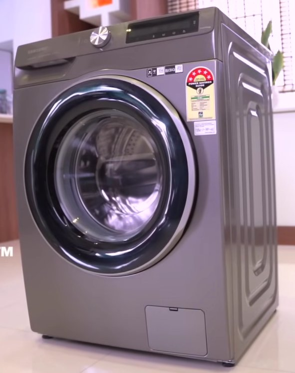
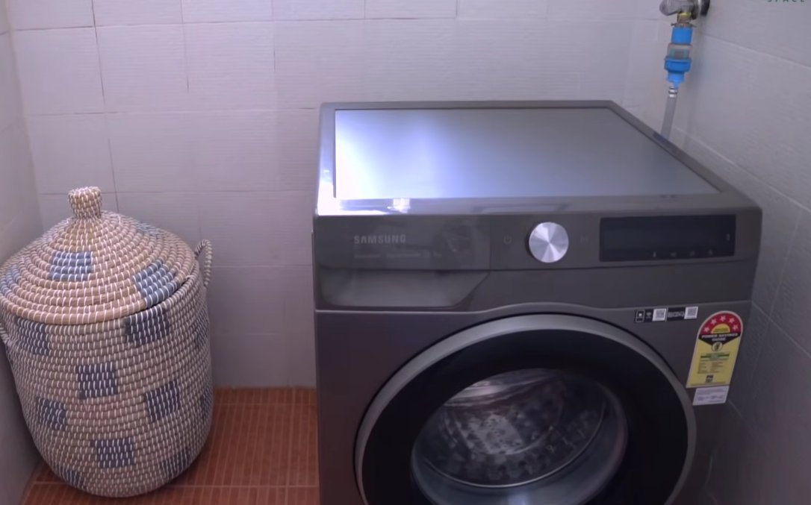

You Were Just About to Do Laundry, Weren't You?
There's nothing worse than loading up a full basket of laundry, pressing start, and then — nothing. Just a blinking 4C on your Samsung washing machine's display, staring back at you like it's personally offended.
Don't panic. The 4C error is one of the most common Samsung washing machine codes, and the good news is that most of the time, you can fix it yourself in under 15 minutes — no plumber required.
This guide walks you through exactly what's causing it and how to fix it, starting with the simplest solutions first.
What Does the 4C Error Code Actually Mean?
The 4C error (sometimes shown as 4E on older Samsung models) means your washing machine is not receiving enough water — or no water at all — within the expected time frame.
When you start a wash cycle, your machine expects water to start filling the drum within a specific window. If it can't detect that flow, it throws up the 4C code and stops to prevent running a dry cycle, which could damage the motor or heating element.
In plain English: your washer is thirsty, and something is blocking its drink.
The culprit is almost always one of these:
- A closed or partially open water tap
- A kinked or bent inlet hose
- A clogged inlet filter
- Low water pressure in your home
- A faulty water inlet valve

Tools You'll Need
- 10–15 minutes (for simple fixes)
- Flathead screwdriver (to remove hose connections)
- Needle-nose pliers (optional, for filter removal)
- Small bowl or towel (to catch residual water)
- Flashlight (to see behind the machine)
- Multimeter (only if you suspect a faulty inlet valve)
Step-by-Step Fixes (Easiest to Hardest)
Before anything else, try a simple reset. Sometimes the error is a temporary sensor glitch.
- Turn off your washing machine using the power button.
- Unplug it from the wall outlet.
- Wait 5 full minutes — the capacitors need time to discharge.
- Plug it back in and restart your wash cycle.
If the 4C code doesn't return, you're done. If it does, continue to the next step.
This is the cause more often than you'd think — especially after moving the machine or if someone turned the taps off.
- Pull the washing machine slightly away from the wall.
- Locate the water inlet tap (or taps — some machines have hot and cold).
- Turn each tap fully counterclockwise (fully open).
- Restart the machine.
A kinked hose acts like a pinched straw — water simply can't get through.
- Check the hose running from the wall tap to the back of the machine.
- Look for any bends, kinks, or sharp curves.
- Straighten any problem areas. If permanently crushed, replace it (under $15 at hardware stores).
- Make sure the machine isn't pushed too far back, squashing the hose.
This is the number one fix for the 4C error. Over time, debris and mineral deposits block the small mesh filter where the hose connects to the machine.
- Turn off the water tap at the wall.
- Unscrew the inlet hose from the back of the machine.
- Look inside the port — you'll see a small mesh screen (the filter).
- Carefully pull the filter out with needle-nose pliers or your fingers.
- Rinse under running water and use a soft brush to remove build-up.
- Reinsert, reattach the hose, turn water back on, and run a test cycle.
This step alone resolves the 4C error in the majority of cases.

Samsung washing machines require a minimum of 0.5 bar (7 PSI). Low pressure — common in older buildings or upper-floor apartments — can prevent the machine from filling fast enough.
- Disconnect the inlet hose from the machine (tap turned off first).
- Point the open end into a bucket, then turn the tap on.
- Water should flow in a strong, steady stream. A weak trickle means low pressure.
If your home has genuinely low water pressure, a plumber can advise, or you may need a booster pump.
If none of the above steps resolved the issue, the water inlet valve itself may be faulty. This electrical solenoid opens to let water in — if it's burned out, no water will enter regardless of pressure.
- Unplug the machine and pull it away from the wall.
- Remove the back panel (usually 4–6 screws).
- Locate the inlet valve where the water hoses connect inside.
- Set your multimeter to resistance (Ω) and test the solenoid coils.
- A working solenoid reads 500–1500 ohms. Zero or OL means it has failed.
Replacement valves for Samsung machines typically cost $20–$60. If you're not comfortable, this is the point to call a professional.
When to Call a Professional
Contact a professional if the 4C error persists after all steps above, you notice water leaking after reassembly, your machine is still under warranty (call Samsung at 1-800-SAMSUNG first), or you're not comfortable with internal electrical components.
A standard service call typically runs $80–$150 plus parts.
Quick Recap
| Fix | Difficulty | Time |
|---|---|---|
| Reset the machine | Easy | 5 min |
| Check water taps | Easy | 2 min |
| Inspect hose for kinks | Easy | 5 min |
| Clean the inlet filter | Easy–Moderate | 10–15 min |
| Check water pressure | Moderate | 10 min |
| Test / replace inlet valve | Advanced | 30–60 min |
Final Thoughts
The Samsung 4C error looks alarming, but it's usually just your machine telling you something simple is blocking its water supply. In most households, cleaning the inlet filter or making sure the tap is fully open is all it takes to get back up and running.
If you found this guide helpful, share it with someone who's currently staring at their Samsung display in frustration — you might just save their laundry day.